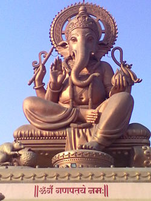

Ganeşa
Ganeşa (tanrısal makamını ayrıştırmak için kullanılır, Ganesha, "Ganapataye"/"ganapati" olarak da bilinir), Hinduizm'deki en tanınmış ve saygı duyulan Tanrı temsillerinden birisidir. Şiva ve Parvati'nin ilk doğan oğludur. Bharati,Riddhi("bilgi" anlamına gelir) ve Siddhi'nin ("mükemmeliyet") eşidir. Marathi, Malayalam ve Kannada'da Vinayaka, Tamil'de Vinayagar ve Telugu'da Vinayakudu olarak da anılır.
'Ga' Buddhi yani bilgiyi sembolize ederken 'Na' Vijnana yani hikmeti sembolize eder. Buradan da anlaşılabileceği gibi Ganeşa bilgi ve hikmetin üstadı, Tanrısı, aynı zamanda başlangıçların ve kategorilerin Rabbi, engellerin kaldırıcısı, Dharma'nın koruyucusu, Karma'nın ve kozmik hafızanın, bilgeliğin efendisi, iyi şansın Tanrısı'dır, meşhur Swastika işareti Ganeşa'nın işaretidir, Ganesha "Aum" dur.Karmanın efendisi olan Ganeşa kişinin yaşamında karşılaşacağı olayları kontrol edebilir, bu nedenle Hindular bütün özel isteklerini Ganeşa'ya iletebilirler.Tanrı Ganeşa sembolik olarak kişinin içinde keşfedilmeyi bekleyen Tanrısallık'tır.
Ganesha Upanişad'da şöyle denir:
"Sen saf farkındalıksın, Brahmansın, 'öz'sün, akıl ve bilgisin, bütün bu dünya senin içinde görünür,sen toprak, su, hava ve ateşsin, Brahma, Vişnu ve Şiva'sın."
Ganesha; göbekli, sarı veya kırmızı, dört kollu ve fil başlı tasvir edilir. Ayrınca bu tasvirlerde çoğunlukla ya bir fareye biner ya da yanında bir fare vardır. Hindular, Ganeşa'nın kendisini Hindu peygamberlerine bu şekilde gösterdiğine veya bu şekilde tezahür ettiğine inanır.Tüm Hint Tanrısı tasvirleri gibi bütün Kozmosun bedensel enkarnasyonu kabul edilen Tanrı Ganeşa tasviri de yoğun bir sembolizmle bezenmiştir:
- Ganeşa'nın büyük fil kafası bilgiyi, aklı, irfanı temsil eder.
- Elindeki balta, arzuların yarattığı acıyı ve ıstırapları yok etmeyi ifade eder. Ganeşa bu sembolik baltayla kişinin hayatındaki engelleri kaldırır.
- Ganeşa'nın diğer elinde tuttuğu kamçı/ip, insanın Tanrı'ya bağlanmasını ve Tanrı'yı sevmesini sağlayan gücü ifade eder.
- Karnının büyüklüğü, Ganesha'nın, insan hayatındaki tüm acıları sevgiyle yutup sindirebileceğini, insanın hayatında karşılaştığı kötü olayları da farkındalıkla sindirebilmesinin önemini ifade eder.
- Ganeşa'nın üzerine bindiği fare, cehaleti ve egoyu temsil eder.Ganeşa'nın ufacık bir fare üzerinde gitmesi aklın ve bilginin ışığının, ego ve cehalet karşısındaki üstünlüğünü ifade eder.
- Ganeşa'nın Lotus çiçeği tutan dördüncü eli, insanın yaşamındaki en yüce gayeyi ruhun evrimini tamamlamasını ve bunun mutluluğunu ifade eder.
- Büyük kulakları Ganeşa'nın bütün insanları, bütün duaları duyabileceğini ayrıca dinlemenin önemini ve bilgeliği ifade eder.
- Ganeşa'nın bir dişinin kırık olması, her türlü düalizmi aştığını ifade eder.Ayrıca sembolik Hint mitolojisine göre Ganeşa dünyanın en uzun destanı olan Mahabharatta'yı yazarken kalemi kırılır ve tek dişini kırarak destanı yazmaya devam eder, kalem vazifesi gören bu diş, bilgiyi ifade etmektedir.Dünyaca ünlü Hindu kutsal kitabı Bhagavad Gita da Mahabharatta destanının içindedir.
- Alnındaki Trishula, Ganeşa'nın zamanın efendisi olduğunu, geçmiş şimdiki ve gelecek zamana bağımlı olmadığını ifade eder.
- Duyarlı ve esnek olan fil hortumu, zorlukları göğüsleyebilecek gücü ayrıca iç dünyanın derinliklerinde keşfe çıkarabilecek enerjiyi ifade eder.
- Bedeninin duruşu ve hortumu AUM'un tasviridir.
- Ayaklarının şekli, dünyada ama dünyadan olmadan yaşamanın önemini ifade eder.
- Öne doğru bakan üçüncü el kutsamayı ve koruyuculuğu ifade eder.
- Dört kolu dört iç özelliği ifade eder: Zihin, bilgi, ego ve vicdan. Ganeşa, saf farkındalık olan ve bu 4 olgunun insanların içinde oluşmasını sağlayan Atman'ı/özü, ruhu ifade eder
Ganeşa Hinduizm dininin koruyucusu ve bekçisi olarak kabul edilir, Hindu olmak isteyen kişi, ilk önce Ganeşa'ya ibadet etmeli kendisini ve samimiyetini ona kabul ettirmelidir, bütün Hindulara göre Ganeşa'ya ibadet etmeden onun "dostluğunu" kazanmadan Hindu olmak mümkün değildir.Her türlü Hindu duasında ilk önce Ganeşa'ya dua edilir, bu küçük dua Hint besmelesidir: "Aum Sri Ganapataye namah" veya "Aum Sri Ganesha namah".
21 Eylül 1995'te dünyanın her yerindeki Hindu tapınaklarında, Hindular'ın "süt mucizesi" (Milk miracle) olduğuna inandıkları ve milyonlarca kişinin 24 saat içinde defalarca tanık olduğu söylenilen bir olay meydana gelmiştir, "Washington Post", "New York Times", "Financial Times", "Guardian" gibi dünyaca ünlü gazeteler ve "CNN", "BBC" gibi kanallar da bu mucize olduğuna inanılan olayı haber yapmışlardır. 24 Eylül 1995'te bir Hindu tapınağından gelen bir haber bütün hinduları ayağa kaldırır. Bir tapınakta, bir rahip bir kaşık ile sembolik olarak Ganesha'ya içirmeye çalıştığı sütün kaybolduğunu fark eder. Hemen ardından bu haber duyulur ve daha şaşırtıcısı bütün Kuzey Hindistan'daki Ganesha figürlerinin sütü içtiği gözlenir. Bu olay tarihe "süt mucizesi" olarak geçmiştir. Daha sonra bu olayın gerçek olmadığı anlaşılmıştır. Olayın aslı Ganesha figürünün yapıldığı maddeden kaynaklandığı ve bu yüzden verilen sütün kabolduğu anlaşılmıştır. Zaten olaydan bir kaç gün sonra maddenin fazla süt emmesinden dolayı Ganesha parçalanmış ve olayın aslı anlaşılmıştır.
